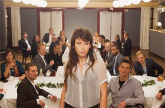

Återträffen
The Reunion

Anna Odell – Sweden 2013 – 88 min.
DOP: Ragna Jorming – E: Kristin Grundström – P: French Quarter Film
With Sandra Andreis, Kamila Benhamza, Anders Berg, Jimmy Carlberg
Digital – Swedish
Preis der FIPRESCI, Venedig
Film director and artist Anna Odell has ruthlessly placed herself in the midst of a situation staged by herself – but based on real events. She was bullied as a child. And when her school class held its 20th anniversary, she was not invited. The film is Anna's idea of how the evening had gone if she had been invited and able to confront her childhood bullies. Not surprisingly, things go terribly wrong – and that's just the beginning.
After the fictional reunion, Odell visits her real, former classmates to show them the film and get their reaction. From here on, the film escalates into extremes – even formally. In her reflection on bullying, guilt and responsibility, it places itself in a conceptual no man's land between reality and staging, where stand-ins and reconstructions let Odell live out her revenge fantasy. It is shocking and tough, but with a point: the unpleasant consequences of bullying, which her film confronts us with, are only too real. – CPH:DOX
Friday 10/10 10.30 p.m. Werkstattkino
Anna Odell was born in 1973 in Stockholm. She is educated in art at the University College of Arts and the Royal Institute of Art. Her examination work Unknown, Woman 2009-349701 - in which she reconstructed a psychosis - sparked a debate about the meaning of art and has been shown at various locations in Scandinavia and in Paris.
Films: The Reunion 2013